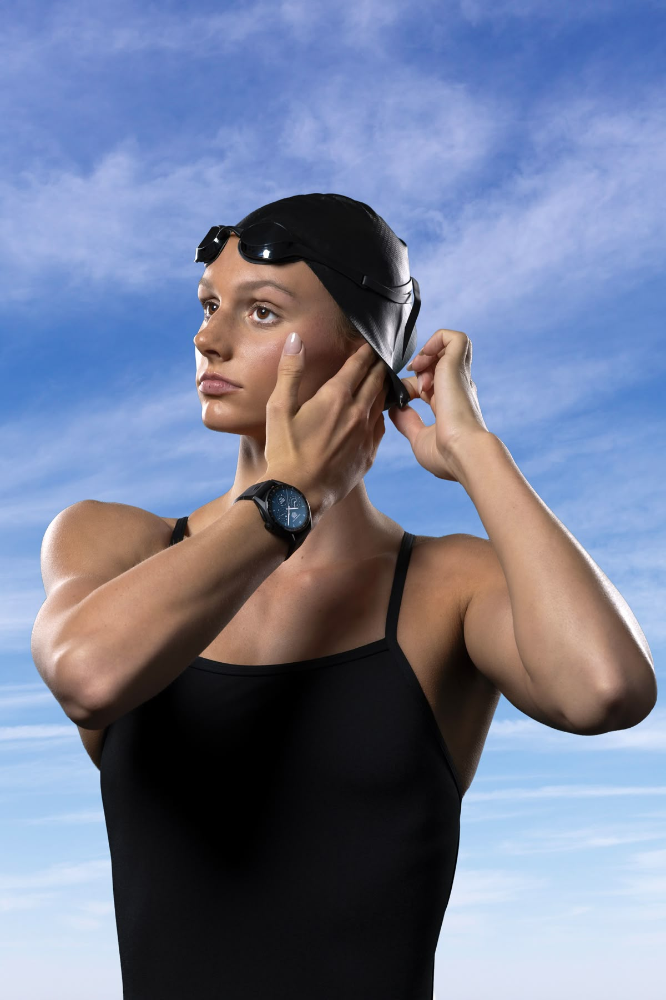

Home web page |
|
Gallery | Goals | Contact | |
|
LegacySummer Ann McIntosh was born on August 18, 2006, in Toronto, Ontario. Her connection to elite sports is deeply rooted in her family:Mother (Jill Horstead): Competed in swimming for Canada at the 1984 Los Angeles Olympics and won a bronze medal at the 1986 Commonwealth Games. McIntosh initially explored various sports like figure skating, gymnastics, and soccer, but by her early teens, swimming became her singular focus. |
The Rise of a Phenom (2020-2022): |
At the FINA World Aquatics Championships in Budapest, at age 15, McIntosh announced herself as a global superstar:Double Gold: She became the youngest World Aquatics champion in swimming in over a decade, winning gold in the 200-metre butterfly and the 400-metre individual medley (IM), setting World Junior Records in both.First Canadian: She was the first Canadian to win two gold medals at a single World Championships.Silver: She won silver in the 400-metre freestyle behind the legendary Katie Ledecky, clocking a time under four minutes (3:59.39) for the first time. |
 |
Setting World Records (2023-2024): |
|
| TIME | DATE |
| 3:56.08 | March 2023 |
| 4:25.87 | April2023 |
| 4:24.38 | May 2024 |
Long Course World RecordsMcIntosh established herself as the world's most versatile distance and medley swimmer, first setting two long-course (50m pool) World Records in a five-day span at the 2023 Canadian Swimming Tria:ls |
|
Paris 2024 Olympic Games |
|
| Medal | Notes |
| Gold | Dominant win, her first Olympic gold. |
| Gold | Set an Olympic Record in the process. |
| Gold | Secured her third gold of the Games. |
| Silver | Finished behind Ariarne Titmus. |
Historic Feat: |
|
| She became the first Canadian athlete to win three gold medals at a single Olympic Games.She tied the Canadian record for the most medals won at a single Olympics (4), matching Penny Oleksiak's total from 2016 | |
Short Course World Records |
|
Following her Olympic success, she continued her dominance in the short course (25m pool) format:She set three new short-course World Records in the 400m Freestyle, 200m Butterfly, and 400m Individual Medley at the 2024 World Aquatics Swimming Championships (25m). |
|
Key RecognitionsWorld Records: |
|
Current long course World Record holder in the 200m IM and 400m IM.Northern Star Award (2024): Recognized as Canada's top athlete of the year.World Aquatics Female Swimmer of the Year (2024): Acknowledged as the best female swimmer globally.McIntosh currently trains with the Sarasota Sharks in Sarasota, Florida, under coach Brent Arckey, where she balances her rigorous training schedule with her high school studies. Her extraordinary versatility across four different strokes and multiple distances makes her one of the most exciting and dominant figures in global swimming today. |
|
| copy rigth 2025 Summer Clintosh official © | |